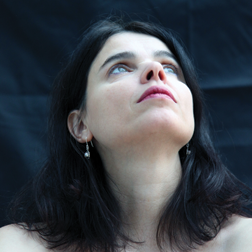

Patrizia Ames
- 1. Music, when soft voices die (1:38)
- 2. L’heure exquise (2:24)
- 3. Der Einsiedler (2:52)
- 4. Love not me for comely grace (2:03)
- 5. Sables mouvants (2:31)
- 6. Dreams (2:36)
- 7. And death shall have no dominion (4:23)
- 8. Dors à mes pieds (5:07)
- 9. Herbsttag (2:23)
- 10. Le papillon (2:11)
- 11. The test (2:36)
- 12. Welke Blätter (1:51)
- 13. The moon (2:22)
- 14. Il passa (2:57)
- 15. Icarus (2:28)
- 16. Ich und Du (1:58)
- 17. Dès lors je sais (2:51)
- 18. A white rose (3:00)
- 19. Dass Du endlich verstehst (1:19)
- 20. Du bist von uns gegangen (4:15)
- 21. Les roses de Saadi (2:14)
- 22. Schlußstück (1:35)